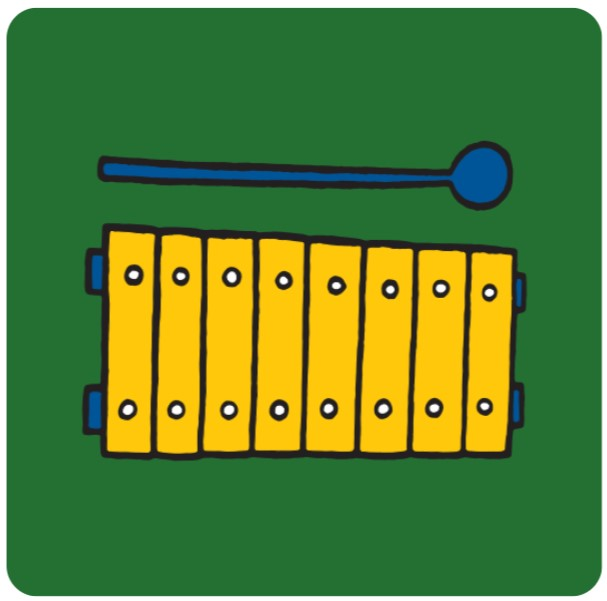

Een filmpje over Nijntje op de fietseen illustratie die naar het balonnenspel leideen illustratie die naar het kleine pluis luisterboek leideen illustratie van een koe wat naar de pagina "dierengeluid leideen illustratie van een berg bladeren wat naar de pagina "verstoppertje leid"een illustratie van een luisterboek wat neer het verhaaltje "nijntje in de dierentuin leid"

een illustratie muziek instrument wat naar de pagina "muziek maken leid"een illustratie van een kaartspel wat naar de pagina "memmorie leid"een illustratie van een auto wat naar de pagina "groot of klein leid"een illustratie van nijntje wat naar de pagina "wat hoord bij elkaar leid"een illustratie van potloden wat naar de pagina "tekekenen leid"een illustratie van nijntje wat naar de pagina "wat hoord bij elkaar leid"